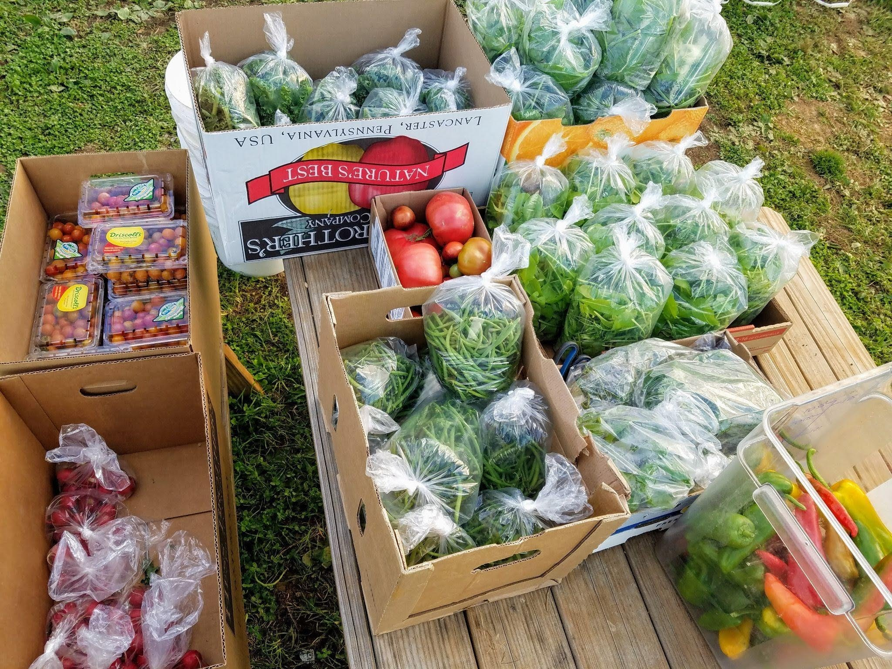
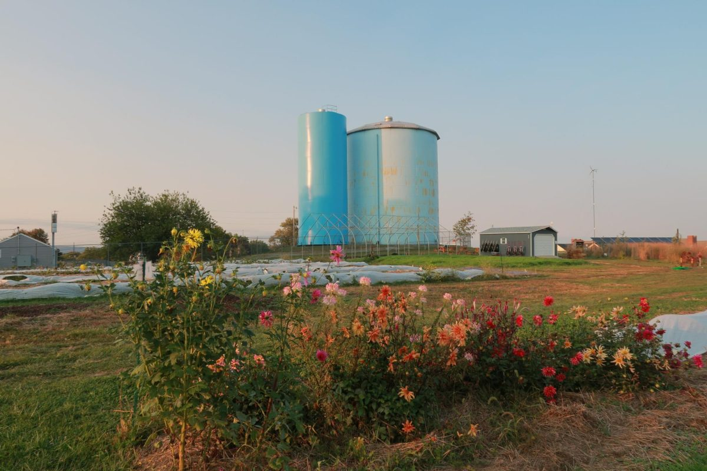
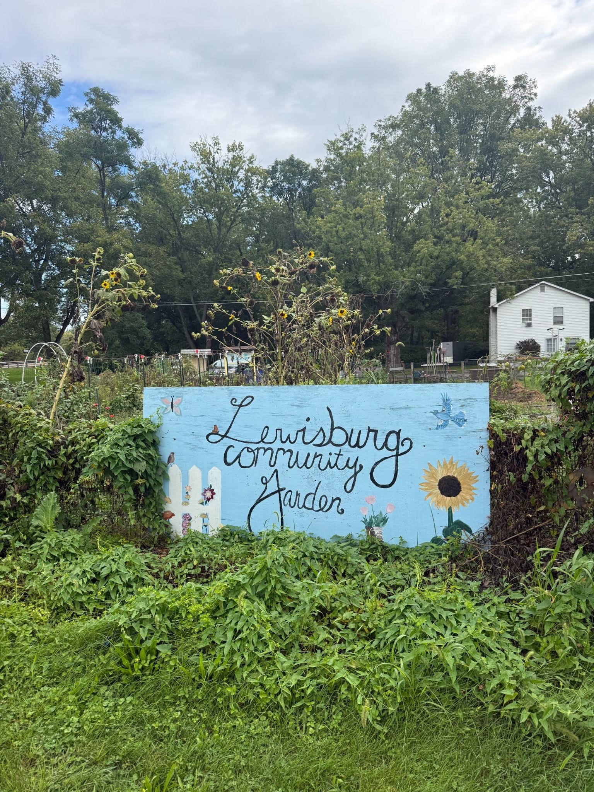
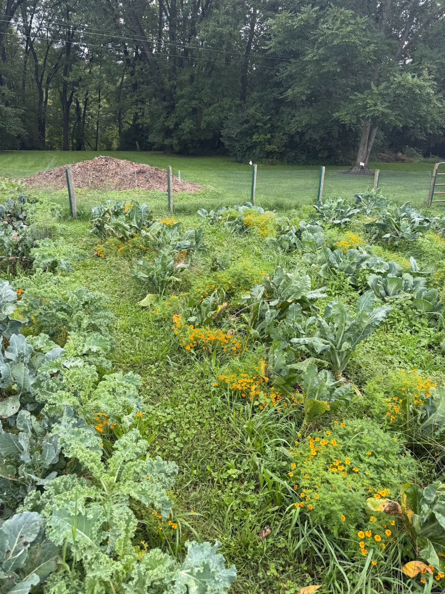

Website
Food Hub
The Morrow Farm and Lewisburg Community Garden make up 18.37% of total donations to the Food Hub, and 45% of the donations from farms and markets.
- 3,748 lbs of produce was donated by Morrow Farm in 2025
- 1,397 lbs of produce was donated by Lewisburg Community Garden in 2025
Link to the Union Snyder Food: Hubhttps://www.union-snydercaa.org/foodhub
The Food Hub is a program of the Union-Snyder Community Action Agency operating out of Miller Center for Recreation & Wellness’ Cornerstone Kitchen. The Food Hub is an innovative and flexible solution to local food insecurity as it re-distributes food donations from the community to the various food access programs in Union and Snyder counties as well as to individuals in emergency need of food, who, for a variety of reasons, may not be able to access the other food resources in the area.
https://censusreporter.org/profiles/16000US4242976-lewisburg-pa/ https://www.centralpafoodbank.org/take-action/policy-research/sun-hunger-mapping/


Food insecurity in Lewisburg?
According to Census Reports, 20.8% of people in the Lewisburg Borough fall below the poverty line, which is almost double the US poverty rate.
- For children under 18, the poverty rate is 35%, and for Senior Citizens the poverty rate is 19%.
- 1 in 8 children in Union County are food insecure according to research from the Central PA Food Bank
- Across the Snyder, Union, and Northumberland counties, more than 22,000 individuals did not know when their next meal would come in 2022.
Bucknell Morrow Farm
Bucknell Morrow Farm:
The Morrow Farm employs year-round regenerative agricultural practices to promote transformative educational opportunities, produce abundant nutritious foods, and foster student health and well-being.
The farm strives to be a welcoming and inclusive space where students, faculty, staff and community members collaborate through active, hands-on learning, cultivating tomorrow’s leaders for a more just and resilient food system.

Lewisburg Community Garden
The Lewisburg Community Garden is a joint project between Bucknell University and the Borough of Lewisburg. The Borough provides land at North Water Street and St. Anthony Street.
About the Garden:
- Half the garden is rented to community members for individual, family, or collective plots, while the other half is volunteer-cultivated to grow organic produce for local food access programs.
- Approximately 2,000 lbs. of produce each year are donated from the graden to local food pantries and hot meal programs from just half an acre of land.
- The garden uses a sliding-scale rent system, allowing families with limited financial resources to access plots while those with greater financial flexibility help offset the cost.

